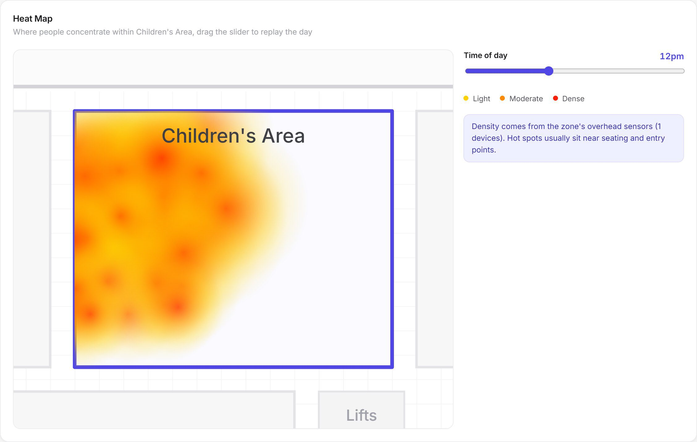
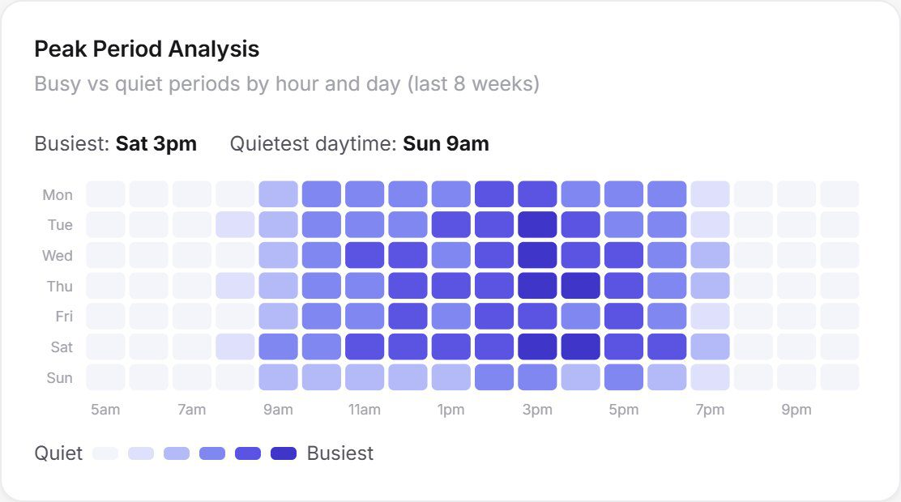

Marketing
Zone analytics for marketing teams.
See whether your displays, activations and campaigns are getting the attention you planned, with footfall and zone-level data, dwell time, heat maps and before-and-after comparisons across every store.

Outcomes
What you can achieve.
- Display and zone performance. See how many people reach, stop at and dwell around each display, zone or activation.
- Campaign uplift. Compare footfall and dwell before, during and after a campaign to measure the lift it created.
- A/B and placement testing. Test two layouts, positions or creative treatments and see which draws and holds more people.
- Attention, not anecdotes. Replace guesswork with anonymous numbers on what is actually drawing the crowd.
- Prove the spend. Show the business and your brands whether an activation delivered the attention it was meant to.
- Across every store. Compare how the same display performs across sites, regions and formats.
In practice
How it works on site.
Sensors count people as they move through each space. Counting happens on the device, and the numbers appear in the platform within seconds.

In the platform
See where attention goes.
Heat maps and zone footfall show which displays, aisles and activations draw and hold people, and which are quietly ignored.
In the platform
Measure every campaign.
Compare footfall, dwell and capture before, during and after an activation to prove the lift, store by store.

Metrics
The numbers you get.
Zone footfall
How many people enter and pass each zone.
Dwell time
How long people linger at a display or area.
Attraction & capture
Passers-by versus those who stop and engage.
Heat maps
Where attention concentrates in a space.
Campaign uplift
Change in footfall and dwell during a campaign.
Site comparison
Display performance across stores and regions.
FAQ
Questions & answers
How does Place Performance help marketing teams?
It measures how many people reach, stop at and dwell around displays, zones and activations, so marketing teams can see whether their displays and campaigns are getting the attention they planned, and compare performance across stores.
Can it measure a specific display or activation?
Yes. A zone can be drawn around any display, aisle, pop-up or activation to measure footfall, dwell time and the share of passers-by who stop, with heat maps showing where attention concentrates.
Can it show whether a campaign worked?
Yes. Comparing footfall and dwell in a zone before, during and after a campaign shows the uplift it created, and the same display can be compared across stores and regions.
Does it combine with sales data?
Yes. Where point-of-sale data is available, zone footfall and dwell can be combined with sales to estimate conversion and sales per visitor for a display or area.
Does it identify shoppers?
No. Counting is anonymous, with processing on the device and no images or personal information collected.
See your places in a new light.
Book a 30-minute walkthrough and we'll scope a pilot for one of your sites: sensors, installation, software and insights in one agreement.